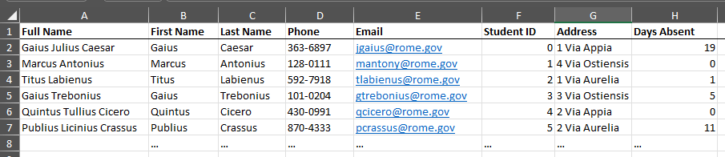
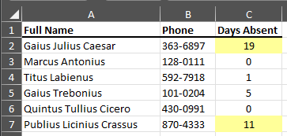

openpyxl: My Favorite Features
openpyxl is a Python library for reading and writing Excel files. Please check our their full documentation for more information. I often use it to format rows or extract data from one Excel file to another. We'll check out various tips with my example below.
The code from this guide is here on GitHub: absentee-highlighter.
For today's example we'll have an input file that represents a large membership document. Our goal will be to find out who hasn't been to class in a while, and in a smaller output file, create a 'roll' for class, highlighting students that have excessive absences. Let's begin.
Below is a screenshot of the main membership Excel file called full-membership.xlsx:

The script will extract the Full Name, Phone, and Days Absent from each row and use them in our output file. If someone has excessive absent days, it will highlight that person's row to alert the teacher.
Starting off, I read in the input Excel file with load_workbook from openpyxl. This function takes in the filename as a string, and for us it is previously
declared as input_filename. Select the active worksheet from this workbook, then declare the row_count. This will be used to iterate through our current file and output file and the value is 2, so that it will skip the header row.
# Read in input file
full_membership_workbook = load_workbook(input_filename)
full_membership_worksheet = full_membership_workbook.active
row_count = 2 # Skip first row, which contains headers
Next it prepares the output file. To create a new Excel file, use: openpyxl.Workbook()
# Set up destination file
absentee_highlighted_workbook = openpyxl.Workbook()
absentee_highlighted_worksheet = absentee_highlighted_workbook.active
To set up the header rows, I used the following values and iterated through the first three cells of the output file.
# Set up header rows on destination file
columns = ["A", "B", "C"]
column_widths = [25, 10, 12]
header_names = ["Full Name", "Phone", "Days Absent"]
for index in range(3):
cell = absentee_highlighted_worksheet.cell(1, index + 1)
cell.value = header_names[index]
cell.border = Border(bottom=Side(style="medium"))
cell.font = Font(bold=True)
absentee_highlighted_worksheet.column_dimensions[columns[index]].width = column_widths[index]
To select a single cell, I used .cell on the worksheet, which takes two parameters, the row index, and column index. The row was always 1, to select that header row,
and the column indicator is index + 1 since the python range starts at 0.
Note
Notice that the row and column index for openpyxl starts at 1.
cell.value allows me to insert text into the cell, cell.border and cell.font allow me to change the border and font attributes of the cell. Specifics about these attributes can be found here for border and here for font.
cell.value = header_names[index]
cell.border = Border(bottom=Side(style="medium"))
cell.font = Font(bold=True)
To get the column width just right, I used column_dimensions[index].width attribute of the worksheet with my numeric values for the size. The index is the letter applied to the column. I came across this in the following guide.
Now the script iterates through the input file, and copies to the output file, and highlights on excessive absent days.
# Iterate through membership worksheet and add rows to destination worksheet
while True:
# Get values from columns
full_name = full_membership_worksheet.cell(row_count, 1).value
phone = full_membership_worksheet.cell(row_count, 4).value
days_absent = full_membership_worksheet.cell(row_count, 8).value
# Check End of File
if full_name is None:
break
# Copy values into highlighted worksheet
absentee_highlighted_worksheet.cell(row_count, 1).value = full_name
absentee_highlighted_worksheet.cell(row_count, 2).value = phone
absentee_highlighted_worksheet.cell(row_count, 3).value = days_absent
absentee_highlighted_worksheet.cell(row_count, 3).alignment = Alignment(horizontal="center")
# If `days_absent` is excessive, highlight the cell
if days_absent > 10:
absentee_highlighted_worksheet.cell(row_count, 3).fill = PatternFill("solid", fgColor="00FFFF99")
row_count += 1
First, I gather the values from the input file for readability. Since we are in a while loop, we first check if we have an empty full_name, signifying that we are at the end of file. If so, we break out of the while loop.
# Get values from columns
full_name = full_membership_worksheet.cell(row_count, 1).value
phone = full_membership_worksheet.cell(row_count, 4).value
days_absent = full_membership_worksheet.cell(row_count, 8).value
# Check End of File
if full_name is None:
break
Next we copy the values into the output worksheet, using it's cell's value attributes. I also used the alignment attribute to horizontally center the Days Absent integer. This is described fully here.
# Copy values into highlighted worksheet
absentee_highlighted_worksheet.cell(row_count, 1).value = full_name
absentee_highlighted_worksheet.cell(row_count, 2).value = phone
absentee_highlighted_worksheet.cell(row_count, 3).value = days_absent
absentee_highlighted_worksheet.cell(row_count, 3).alignment = Alignment(horizontal="center")
Now the script uses a simple if statement to check if the days_absent are more than 10. If so, it uses a cells fill attribute to highlight the cell. Here is further information from openpyxl regarding this.
# If `days_absent` is excessive, highlight the cell
if days_absent > 10:
absentee_highlighted_worksheet.cell(row_count, 3).fill = PatternFill("solid", fgColor="00FFFF99")
Finally I used the save function on the workbook to finalize the output file! It requires the filename as a parameter as a string. Be sure to end the string with .xlsx to make sure it works as an Excel file.
# Save file!
absentee_highlighted_workbook.save(filename="excessive-absentees-highlighted-" + date.today().strftime("%m%d%y") + ".xlsx")
And below is the output! Thank you for reading!
